Malaria
Malaria
{kind=link}
{kind=link}
{kind=link}
{kind=link}
Geomap Description
Main zone with malaria caused by Plasmodium falciparum (marked in red
Introduction to Malaria
Malaria clearly tops the list of the serious tropical diseases. More than 40% of the world's population living in 100 countries are threatened by malaria. The annual incidence of malaria cases ranges from 300 to 500 million persons. According to the World Health Organization (WHO) Malaria is responsible for the death of 1.5 to 2.7 million people each year. African countries south of the Sahara suffer most and account for 90% of deaths caused by malaria. Most vulnerable are children under five and expecting mothers. One child out of 20 succumbs to malaria before reaching the age of five years.
Malaria is transmitted to humans as well as to other vertebrates (host) by mosquitoes belonging to the genus Anopheles (vector). The causative agents of malaria are protozoan belonging to the genus Plasmodium. The cycles of the malaria parasite within the vector and the host are highly complex.
So far no protective vaccines are available. The only means to fight against malaria are integrated vector management and therapy. Prophylactic measures are only recommended for short term stays in endemic areas.
| 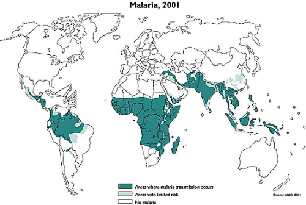 |
| World wide distribution of Malaria |
| (c) WHO (World Health Organization) (http://www.who.int/ith/en/)
|
 |
| Duration of Malaria Transmission Season |
| (c) MARA / ARMA Mapping Malaria Risk in Africa. www.mara.org.za
|
Anopheles mosquitoes, the vector of malaria
General
Anopheles is a genus of mosquito (Culicidae). There are approximately 460 recognised species: while over 100 can transmit human malaria, only 30-40 commonly transmit parasites of the genus Plasmodium that cause malaria which affects humans in endemic areas. Anopheles gambiae is one of the best known, because of its predominant role in the transmission of the deadly species - Plasmodium falciparum.
Some species of Anopheles also can serve as the vectors for canine heartworm Dirofilaria immitis, the Filariidae Wuchereria bancrofti and Brugia malayi, and viruses like the one that is the cause of O'nyong'nyong fever. Mosquitoes in other genera (Aedes, Culex) can also serve as vectors of disease agents.
Malaria is transmitted by female Anopheles mosquito from one human host to the other during the blood meals. The protozoan parasites taken up from an infected person reaches the mosquito gut together with the blood. The intestine of the mosquito is the starting point for the cycle of the plasmodium within the vector. Ten to fourteen days later the plasmodia are found in the salivary glands of the mosquito, ready to be injected and to infect another person.
World wide several hundred species assigned to the genus Anopheles have been identified. Only about 40 species are able to transmit malaria. The most prominent vector of malaria in sub-Saharan is Anopheles gambiae. Other important Anopheles vectors in sub Saharan Africa are Anopheles funestus and Anopheles arabiensis. The latter is predominately zoophilic (prefers animals).
The life cycle
Like all mosquitoes, anophelines go through four stages in their life cycle: egg, larva, pupa, and imago. The first three stages are aquatic and last 5-14 days, depending on the species and the ambient temperature. The adult stage is when the female Anopheles mosquito acts as malaria vector. The adult females can live up to a month (or more in captivity) but most probably do not live more than 1-2 weeks in nature.
| 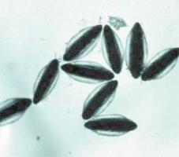 |
| Anopheles spp. |
| (c) Entomology and Plant Pathology, Oklahoma State University (www.ento.okstate.edu/mosquito/biology.html)
|
The female mosquito lays her eggs on the water surface.
| 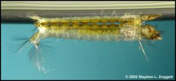 |
| Larvae hatch from the eggs, and pass through 4 stages. |
| (c) Stephen L. Dogett, NSW Arbovirus Surveillance & Vector Monitoring Program
|
So called larvae hatch from the eggs, start to take up nutrients and pass through four larval stages before undergoing transformation to the pupal stage. The picture shows a fourth instar larva resting below the water surface.
| 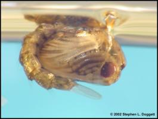 |
| The adult (imago) mosquito emerges from the pupa. |
| (c) Stephen L. Dogett, NSW Arbovirus Surveillance & Vector Monitoring Program
|
The fourth instar larva is transformed into a pupa from which the adult emerges.
| Anopheles gambiae biting human arm |
| (c) Curtis C.F. (Courtesy of EcoPort, www.ecoport.org)
|
Following mating with males, the females search for a blood meal. Eggs are produced, and the reproduction cycle is closed.
The cycle can take between 7-16 days and is influenced by temperature and humidity - the higher the temperature and humidity the more rapid the life cycle.
Malaria transmission and control
Understanding the biology and behavior of Anopheles mosquitoes can help understand how malaria is transmitted and can aid in designing appropriate control strategies. Factors that affect a mosquito's ability to transmit malaria include its innate susceptibility to Plasmodium, its host choice and its longevity. Factors that should be taken into consideration when designing a control program include the susceptibility of malaria vectors to insecticides and the preferred feeding and resting location of adult mosquitoes.
Breeding sites
The presence of water is essential for any mosquito to complete its cycle. The Anopheles larvae can develop in numerous different water habitats, from shaded ponds and pools to hoof prints and car tracks. Anophelines tend to prefer water that is clean. But some Anopheles species have been shown to breed in polluted drains.
Biting behaviour
Anopheles mosquitoes bite preferably from dusk to dawn. In many instances, malaria infected mosquitoes are late night biters whereby older mosquitoes are more likely to be infected. These are often found biting between 12 am to 4am. But be careful: Different species of anopheles mosquitoes may have different peaks of biting times, preferences (animals or humans) and different resting habits (indoor or outdoors). Blood fed mosquitoes rest indoor in dry or windy areas where safe, outdoor resting sites are scarce.
Plasmodia, the parasites
The causative agents of malaria are protozoan belonging to the genus Plasmodium. There are four different species of Plasmodium that infect humans, namely Plasmodium falciparum, P. vivax, P. ovale and P. malariae. Each has different incubation times, i.e. the time elapsing between the infection and the appearance of the first symptoms. Plasmodium falciparum, the most prevalent and most dangerous species in Africa has an incubation time of 10 to 14 days.
As the figure shows, the development of the Plasmodium species are very complex, divided into a cycle within the vector, and within the host, respectively. If a female Anopheles has fed on blood infected with Plasmodium, the parasite undergoes various stages within the mosquito. Ten to fourteen days later, so called sporozoites accumulate in the salivary glands of the mosquito and are injected into the human blood stream. The Plasmodia migrate to the liver where they multiply. Thereafter, parasites return to the bloodstream where they invade the red blood cells. The synchronous rapid multiplication resulting in the destruction of blood cells trigger the well known, characteristic symptoms such shivering, fever and sweating.
P. falciparum is the cause of "malignant" or cerebral malaria that can quickly lead to unconsciousness and death. Untreated or poorly treated malaria infections can cause recurring fevers.
| 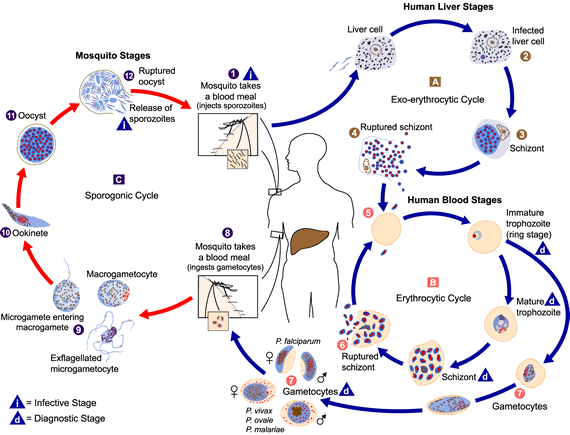 |
| Plasmodium spp. life cycle |
| (c) CDC (Courtesy of EcoPort, www.ecoport.org)
|
The symptoms of malaria infections
Symptoms:
The main symptom of malaria is fever caused by the simultaneous rupturing of red blood cells, followed by a large-scale multiplication of the Plasmodium parasites. The febrile stages are often accompanied by chills and sweating. Other symptoms may be headache and joint pains. P. falciparum infections cause very often severe, life-threatening conditions such as organ failures, manifested by coma, impairment of consciousness, or other neurological abnormities. Further symptoms of severe malaria are anemia (destruction of red blood cells), hemoglobinuria (hemoglobin in the urine), pulmonary edema (fluid buildup in the lungs), and cardiovascular collapse. Severe malaria occurs most often in persons who have no immunity to malaria or whose immunity has decreased. These include residents of areas with low or no malaria transmission, and especially young children and pregnant women in areas with high transmission.
Diagnosis:
A definitive diagnosis of malaria can only be made by examination of blood samples. This is a relatively straightforward procedure requiring a finger prick of blood. However, microscopy facilities are needed to examine the blood slide and these are often not available. It is accepted as appropriate in most endemic countries to treat cases of fever even though only a percentage of them may actually be confirmed as malaria. Typhoid, meningitis and pneumonia are often wrongly diagnosed as malaria on clinical examination alone.
Treatment:
Antimalarian treatment policies have undergone important changes over the past years. This is mainly thanks to the development of drugs based on artemisinin and its derivatives. Artimisinin is extracted from Artemisia annua, a plant used for centuries in China for malaria therapy. Artemisinin-based combinations (ATC) represent the best options to treat malaria. Artemisinin can be combined with traditional drugs such as lumefantrine, amodiaquine, mefloquine or sulfadoxine-pyrimethamine. The reader is referred to the WHO guidelines for the treatment of malaria (click to follow link)
Reduction of malaria transmission by integrated vector management (IVM)
Malaria transmission and control
Understanding the biology and behavior of Anopheles mosquitoes can help understand how malaria is transmitted and can aid in designing appropriate control strategies. Factors that affect a mosquito's ability to transmit malaria include its innate susceptibility to Plasmodium, its host choice and its longevity. Factors that should be taken into consideration when designing a control program include the susceptibility of malaria vectors to insecticides and the preferred feeding and resting location of adult mosquitoes.
Breeding sites
The presence of water is essential for any mosquito to complete its cycle. The Anopheles larvae can develop in numerous different water habitats, from shaded ponds and pools to hoof prints and car tracks. Anophelines tend to prefer water that is clean. But some Anopheles species have been shown to breed in polluted drains.
Biting behaviour
Anopheles mosquitoes bite preferably from dusk to dawn. In many instances, malaria infected mosquitoes are late night biters whereby older mosquitoes are more likely to be infected. These are often found biting between 12am to 4am. But be careful: Different species of anopheles mosquitoes may have different peaks of biting times, preferences (animals or humans) and different resting habits (indoor or outdoors). Blood fed mosquitoes rest indoor in dry or windy areas where safe, outdoor resting sites are scarce.
Guidelines and recommendations
Broad knowledge exists on all levels of malaria, reaching from the vector, the parasite, its cycle in the mosquito and in the human body, as well as in the field of therapy. The complexity of the disease points out and requires that the whole array of control measures at hand have to be used simultaneously in order to be successful.
BioVision emphasizes the integrated vector management (IVM) as part of its commitment to alleviate living conditions. To reduce the burden caused by mosquitoes is an important goal within human health.
To fight against mosquitoes requires involvement and concerted actions on different levels.
- Medical entomologists are required with in-depth knowledge of the vector population and malaria incidence in a given area.
- Experienced social workers need to mobilize communities and have to create awareness about malaria.
- Education on malaria and the possibility to reduce likelihood to become infected is a key activity.
- Experts have to train field staff and support personnel in mapping breeding sites, monitoring mosquito populations and in carrying out interventions.
- The establishment and maintenance of contacts with the authorities and stakeholders by project leaders plays an essential role.
Breeding sites
Mapping
As already stated, mosquito larvae breed in many different aquatic environments. Those breeding sites need to be located and mapped. Breeding sites change during the rainy and the dry season. A Geographical Positioning System (GPS) is a helpful tool, especially to locate temporary habitats of mosquitoes. The breeding sites are divided into categories based on their properties, e.g. wells, ponds, car tracks. Satellite imaging can be used to classify the infrastructure of an area, including the land use, e.g. homesteads, agricultural land. The Picture 1 shows An. gambiae larvae breeding in a brick making pond.
Treatment of breeding sites with larvicides
Products based on Bacillus thuringiensis israelensis (Bti) are ideal to eliminate the larval stages of the mosquitoes present in the water. There are different Bti products (formulations) available. A suitable formulation has to be selected which is uniformly distributed on the water surface. The concentration has to be adjusted in order to reach 100% mortality within 24 h. For Bti interventions in the two BioVision funded projects of Nyabondo and Malindi, Bti formulated as tablets and packed in blisters are used. Bti is safe for humans, life stock and the environment. Bti may even be used to protect from larval breeding in drinking water.
| 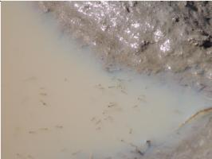 |
| Breeding site (Nyabondo) with Anopheles larvae, ready to be treated. |
| (c) Prof. Peter Luthy
|
Bti acts fast, but its persistence is limited. The intervals of re-treatments have to be determined carefully and adjusted to environmental factors such as the nature of the breeding site, meteorological conditions and the re-colonization with mosquito larvae. Interventions are required as soon as third instar larvae are present (Picture 1).
| 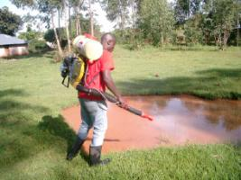 |
| Treatment of a breeding site with Bti (Nyabondo) |
| (c) Prof. Peter Luthy
|
In the two large scale projects Nyabondo (30 km2) and Malindi (16 km2), supported by BioVision, an estimated 6 to 8 Bti-interventions per year are required.
The Bti suspensions are applied with hand operated or motorized knap sack sprayers (Picture 2).
Monitoring of larvae and adult mosquitoes
| 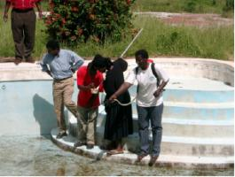 |
| Monitoring of larvae in an unused swimming pool (Malindi) |
| (c) Prof. Peter Luthy
|
The larval populations have to be monitored regularly in representative sentinel breeding sites. Ten 250 ml dips are taken for larval counts, whereby the mosquito species and instars are recorded (Pictures 3, 4).
| 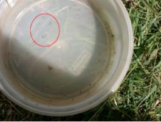 |
| Anopheles larvae sampled from an unused swimming pool (Malindi) |
| (c) Prof. Peter Luthy
|
| 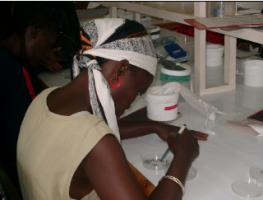 |
| Monitoring of adult mosquitoes caught in a CDC light trap by a mosquito scout (Malindi) |
| (c) Prof. Peter Luthy
|
CDC light traps are used to catch adult mosquitoes between dusk and dawn in predeter-mined sites, mostly inside homes. The mosquitoes caught are grouped into species and counted (Picture 5,6). The number of adult mosquitoes provides information on the efficacy of the Bti interventions and the species specific composition of the mosquito population.
| 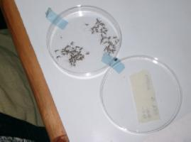 |
| Mosquitoes are grouped according to species and counted |
| (c) Prof. Peter Luthy
|
Water management and environmental hygiene
| 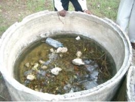 |
| This plastic bottle has to be disposed of correctly. The water catching concrete bin has to be filled with soil or other material. |
| (c) Prof. Peter Luthy
|
The proper handling of water should be done jointly with specialists, the authorities and the population. Where ever feasible stagnant water must be avoided, removed or replaced weekly. Containers used for water storage must be covered with mosquito tight material such as lids and nettings. Rubbish such as plastic bottles (Picture 7), containers and used tires (Picture 8) should be collected regularly and disposed of.
| 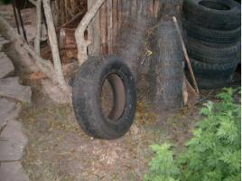 |
| Tires have to be disposed of or stored inside buildings |
| (c) Prof. Peter Luthy
|
| 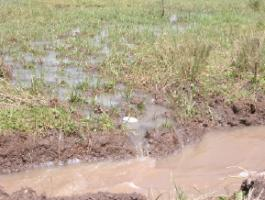 |
| Drainage of water into a newly constructed trench (Nyabondo) |
| (c) Prof. Peter Luthy
|
Trenches should be maintained and cleaned regularly in order to allow optimum drainage (Picture 9). This applies for road side trenches, for gullies and sewers, as well as for irrigation trenches. Managed water has to flow freely and stagnant spots have to be eliminated (Picture 10).
| 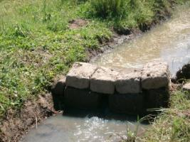 |
| Correct water management. The trench is clean, the water is able to flow Nyabondo |
| (c) Prof. Peter Luthy
|
| 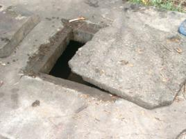 |
| A man hole with a damaged cover |
| (c) Prof. Peter Luthy |
Water collecting depressions have to be backfilled. Access for gravid mosquitoes, ready for oviposition, to underground water has to be blocked by closing for example gaps with cement (Pictures 11, 12).
Major problems are abandoned fish ponds (Nyabondo) and temporary unused swimming pools (Malindi). Fish ponds should be re-stocked permanently with fish, and the rain water in unused swimming pools should be drained at weekly intervals. Where this is not possible, Bti treatments have to be carried out.
| 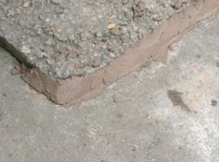 |
| The cover is made mosquito tight with cement my the mosquito scouts (Malindi) |
| (c) Prof. Peter Luthy
|
Bed nets
- The standard ITNs, which have to be re-treated with the insecticide (Power-Tabs) every 6 months.
- The Long Lasting Insecticide Treated Net (LLITN), which displays insecticidal activity for 3 to 5 years.
| 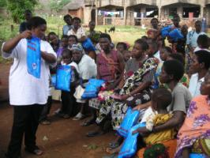 |
| Instruction on the proper use of LLITNs |
| (c) Prof. Peter Luthy
|
The future lays no doubt in the LLITNs. The dispatch of nets to the population requires well organized structures to assure their proper use. Within the BioVision's IVM projects, campaigns to provide the residents with bed nets, constitute an important element. For example, 4,000 LLITNs have bee distributed within the Malindi project site.
Owners of new nets have been instructed and registered (Pictures 13, 14).
Periodic checks are carried to assure that the nets are in place and intact.
Encouraging reports from Kenya state that the malaria victims among children under five were reduced by 50%, i.e. from 34,000 to 16,000. This was mainly attributed to the higher coverage with nets.
| 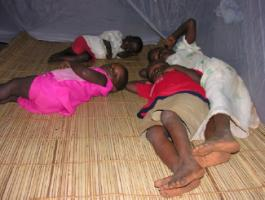 |
| Children protected by LLITNs |
| (c) Prof. Peter Luthy
|
See 'Vestergaard Frandsen - Disease Control Textiles' a manufacturer of mosquito nets under www.vestergaard-frandsen.com
Information and Education
Creation of public awareness
| 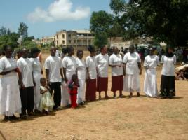 |
| The mosquito scouts of Malindi, employed by the IVM project |
| (c) Prof. Peter Luthy
|
The BioVision's malaria projects emphasize the creation of public awareness. Communities and its members can and must contribute to the reduction of the mosquito populations.
The measures are simple, actually based on common sense. The residents are urged to remove stagnant water and to make potential underground breeding sites mosquito tight. Water storage tanks have to be covered. Rubbish needs to be collected. Used tires easily collect water and become breeding sites. The same is true for wreckages of cars and agricultural implements.
Since the vectors carrying malaria have a substantial flying range of one kilometer or more, the creation of public awareness is best organized on a community level by experienced social scientists.
The efficacy of the dissemination of the instructions to the residents needs to be monitored with questionnaires. This is done in the Malindi project. The careful evaluation of the questionnaires should lead to an improvement of the methodology in awareness creation.
Support staff like the mosquito scouts in Malindi represent an important link between the population and the professionals, responsible for the implementation of the IVM. The mosquito scouts in Malindi (Picture 15) which carry out the mosquito monitoring are acquainted with the residents and present an ideal platform mutual discussions on malaria prevention.
| 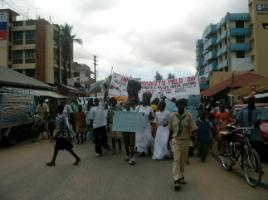 |
| The procession on the Annual Mosquito Field Day in Malindi |
| (c) Prof. Peter Luthy
|
Campaigns of awareness are neither one-time actions nor one-way roads. Malindi organizes an annual mosquito day to create awareness and to promote open dialogues (Picture 16).
Education
| 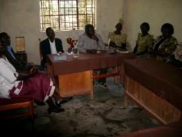 |
| Briefing with the Headmaster and his staff on integration of malaria control into the biology courses (Nyabondo) |
| (c) Prof. Peter Luthy
|
Schools play an eminent role in malaria prevention. Schools in the Nyabondo IVM project collaborate closely with the field staff (Picture 17).
Malaria cases among school children could be reduced by drainage of stagnant water around the buildings. The drained ground allowed for an extension of play grounds and sport fields. The surroundings of the schools are usually kept very clean with water catching rubbish being absent.
 |
| A school class (Nyabondo) which attends a course in malaria prevention |
| (c) Prof. Peter Luthy
|
Biology courses offer an ideal platform to learn more about mosquitoes and infectious diseases (Picture 18).
Demonstration material is available at the doorstep. The knowledge gained at school is brought home and can have a snowball effect.
Support by authorities and stakeholders
| The District Officer of Malindi attends the Annual Mosquito Day and is briefed by Dr. Charles Mbogo, the leader of the IVM project |
| (c) Prof. Peter Luthy
|
The BioVisions two malaria control projects have the full support of the authorities and stakeholders which is essential for IVM where public and private property is involved. Regular meetings are organized by the project leaders to inform on the state of the art, to plan and to decide on future actions (Picture 19).
Information Source Links
- A Layman's Guide to Malaria. 2001. Martine Maurel, updated by Stephen Toovey and Andrew Jamieson.
- Centers for Disease Control and Prevention. www.cdc.gov
- International Institue of Rural Reconstruction (IIRR), 1999: Environmental Health, A sourcebook of materials. Malaria
- Oxfam. Malaria Manual - Humanitarian Manual. Malaria Control Manual, Introduction. Oxfam International, www.oxfam.org . To view document click here or refer to page on "Publications".
- Prof. em. Dr. Peter Luthy, Institute for Microbiology, Swiss Federal Institute of Technology, 8093 Zurich, Switzerland
- WHO Guidelines for the treatment of malaria. To view document click here or refer to page on "Publications".
- WHO Website on Malaria www.who.int/malaria
- Wikipedia www.wikipedia.org
Contact information
- Orion East Africa Limited, P.O. Box 10170-00100, Nairobi, Kenya. Tel. +254-20-786320/785414. (Supplier of Pesthrin, a natural insecticide/acaricide made from pyrethrum flowers). Email: orion@orioneastafrica.co.ke
- Valent BioSciences Corporation (Supplier of preparations of Bacillus thuringiensis israelensis for the control of mosquito larvae). www.valentbiosciences.com
- Vestergaard Frandsen (Supplier of mosquito nets and other technologies for disease control in the tropics) www.vestergaard-frandsen.com
Last updated on:
| Unless otherwise stated, all content on the Infonet Biovision Website is licensed under a Creative Commons License | Disclaimer |